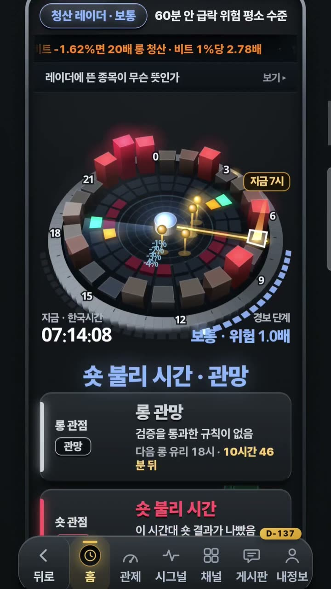
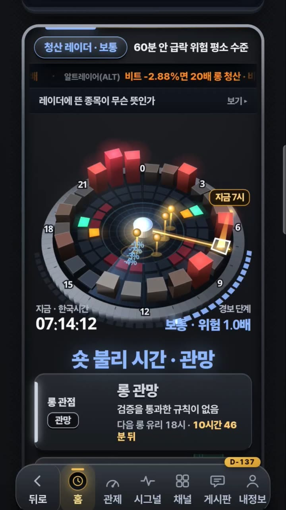
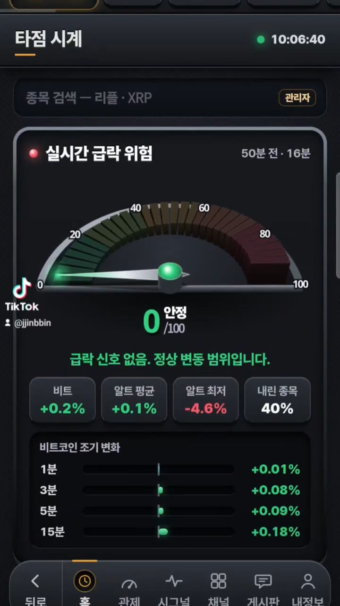
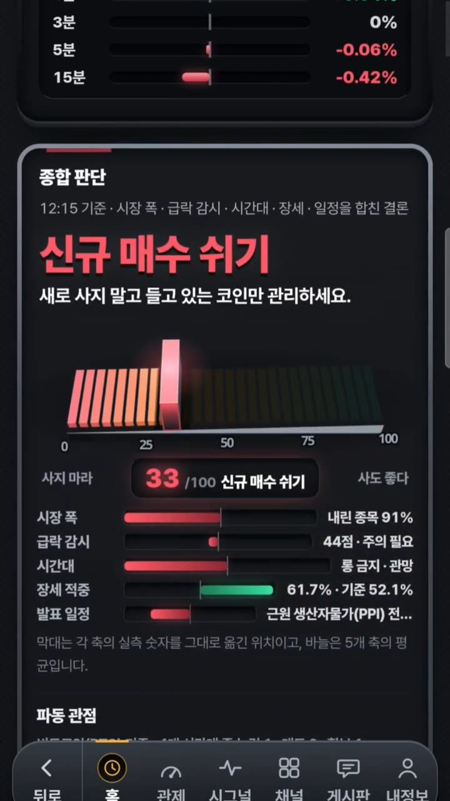

궁금한 건,
풀어 드립니다.
자동매매 봇부터 실시간 방송 앱, 회원용 휴대폰 앱, 회사 장부 프로그램까지. 직접 설계하고 매일 돌리는 1인 제작자가 사장님 일에 꼭 맞는 프로그램을 만듭니다.
2026년 11월 1일 기준 · 통합 관제 등록부와 채널 공개 정보



말 대신 실제 화면으로 보여 드립니다
아래는 제가 만들어 매일 쓰는 앱의 실제 화면입니다. 숫자는 그 순간의 실제 자료이고, 속 계산 방식은 공개하지 않습니다.
시장이 흔들리면 먼저 알립니다
실시간 급락 위험을 0~100으로 한눈에, 주요 흐름을 1·3·5·15분 단위로. 조건이 되면 휴대폰으로 바로 알려 주는 알림 프로그램의 실제 화면입니다.
복잡한 자료를 한 장의 그림으로
24시간 시계 위에 위험 구간과 지금 자리를 올려, 긴 표 대신 그림 한 장으로 읽게 했습니다. 화면은 휴대폰에서 바로 쓰도록 설계했습니다.

숫자를 말로 풀어 줍니다
여러 축의 자료를 합쳐 한 줄 결론과 그 이유를 보통 말로 적어 줍니다. 전문가가 아니어도 읽히는 화면을 만드는 것이 제 기준입니다.
설치 없이 홈 화면에 올리는 앱
회원 가입·승인, 알림, 게시판까지 갖춘 휴대폰 앱을 설치 없이 홈 화면에 올려 씁니다. 외부 서비스 의존 없이 직접 운영합니다.
직접 만들어 매일 쓰는 프로그램
통합 관제에 등록된 23개 가운데 주요한 것들입니다. 하는 일과 쓴 기술만 적었고, 속 구조는 적지 않습니다.
자동매매·시장 분석
실시간 자료를 받아 판단하고 알리는 프로그램
코인 자동매매 본체 매일 가동
해외 거래소 선물 자동매매의 본체. 실시간 수집기, 매매 판단, 매매일지, 텔레그램 카드 발송. 캔들·호가는 SQLite에 쌓고, 학습은 Python 파이프라인으로 돌립니다.
현물 자동매매 v2
국내 거래소 현물 자동매매. 캔들 캐시, 분할 매수, 텔레그램으로 켜고 끄는 스위치.
조작급락 스캐너 v1.4
거래소 6곳의 공개 시세를 웹소켓으로 받아 급락·급등을 감지하고 회복까지 추적합니다. 과거 스캔, 종목 전체 화면, 하루 한 파일 기록.
텔레그램 채널 봇 11개 매일 가동
신규 종목·급등 직전·급락 경고·뉴스 합의·세력 감지·종목 진단 카드를 채널마다 자동으로 보냅니다. 카드 이미지는 코드로 그리고, 결과를 추적해 적중률을 집계합니다.
학습본부·발송 게이트·디스패처
검색(RAG)과 추론 서버, 카드 발송 여부를 판정하는 게이트, 신호를 채널로 나누는 디스패처, 9채널 통합 대시보드.
방송·콘텐츠
자료가 저절로 방송과 영상이 되는 프로그램
MINJINE SCHOOL 배포 200회
강의·실시간 방송·쇼츠 앱. 3D 진행자가 실시간 시장 자료를 설명하고, 강의를 자동으로 만들고, 쇼츠를 뽑습니다. 목소리 합성, 로컬 글쓰기 모델, 이미지 뱅크까지 한 앱에.
유튜브 자동화
자료 수집 → 대본 → 장면 → 영상 합성 → 예약 올리기까지 한 줄로 잇습니다. 대시보드에서 편성·확인·성과를 봅니다.
앱·웹
회원과 회사가 매일 쓰는 화면
MINJINE 앱 운영 중
설치 없이 홈 화면에 올리는 회원용 앱. 가입·승인, 알림, 14개 화면. 외부 서비스 의존 없이 직접 운영하고, 회원 홈페이지는 공개 터널로 엽니다.
주식 관제탑 · 주식 봇
주식 추천 실적을 집계하는 대시보드와 주식 텔레그램·카톡 자동 응답 봇.
스마일유통 거래관리 실제 회사 사용
거래 입력, 미수금, 세금계산서 발행 현황을 한 화면에서. 복제 방지 잠금과 월말 열쇠로 관리합니다.
운영 도구
프로그램들을 돌보는 프로그램
통합 관제 대시보드
프로그램 23개의 상태·헬스·의존성·켜고 끄기를 한 화면에서. PowerShell 실측 스캐너로 실제 프로세스와 포트를 읽습니다.
랜전송
두 PC를 탐색기처럼 오가며 파일을 복사·편집하고 상대 PC 프로그램을 켭니다. 50MB 전송 0.7초.
텔레그램 PC 제어 · 배선도
휴대폰 텔레그램으로 PC 프로그램을 켜고 끄는 봇, 그리고 전체 시스템을 1분마다 실시간으로 그리는 지도.
일반 업무 도구
고객관리 영수증, 시간표 메이커, 엑셀 분석, 부품 식별표, 심리 테스트 웹앱 같은 작은 도구들.
쓰는 기술
실제로 쓰고 있는 것만 적었습니다. 외부 서비스 의존은 되도록 줄이고, 이 PC 안에서 돌아가게 만듭니다.
언어·실행
데이터
AI
실시간·연동
화면·영상
배포·운영
이런 일을 맡기실 수 있습니다
매일 손으로 되풀이하는 일이면 대부분 됩니다. 지금 쓰는 엑셀 양식이나 방식은 그대로 두고 만듭니다.
엑셀·파일 정리 자동화
파일을 모으고, 합치고, 보고서로 만드는 일을 버튼 한 번으로 줄입니다.
조건 알림
정해 둔 조건이 되면 휴대폰으로 바로 알려 줍니다. 무엇을 지켜볼지는 함께 정합니다.
영상 자동 제작·예약 올리기
자료 정리부터 영상 만들기, 예약 올리기까지 한 줄로 이어 손이 덜 가게 합니다.
거래 장부·세금계산서 관리
거래 입력, 미수금, 발행 현황을 한 화면에 모읍니다. 실제 회사에서 쓰고 있습니다.
휴대폰에서 쓰는 회원용 앱
설치 없이 홈 화면에 올려 쓰는 앱과 회원 관리까지 만들어 운영하고 있습니다.
두 컴퓨터 잇기 · 원격 제어
두 컴퓨터 사이에 파일을 주고받고, 휴대폰이나 다른 PC에서 프로그램을 켜고 끄는 도구를 만듭니다.
채널에 올린 영상
코인 파밍에는 시장 이야기를, 민지네 브이로그에는 일상과 만드는 과정을 올립니다. 누르면 여기서 바로 재생됩니다.
코인 파밍 @코인파밍
채널 보기암호화폐 타점 레이더
암호화폐 분석 엔진
암호화폐분석 시황 파동관점
암호화폐분석 시황 브리핑
암호화폐분석 실시간 단분간 매수금지???
비트코인 시황 뉴스 정보 추천코인 정리
민지네 브이로그 @minjinehot
채널 보기바이브코딩 PC원격 제어하기
섬여행 사량도 명소
전국 태권도 대축전 영상
길냥이 싸데기 2탄
진해벚꽃축제 여좌천 미리보기
길냥이 찰지게 뺨때리는 영상(풀영상포함)
이렇게 진행합니다
정리된 문서가 없어도 됩니다. 될지 안 될지부터 먼저 말씀드립니다.
묻기
하고 싶은 일을 카톡으로 한 줄 보내 주세요.
정하기
될지, 어떻게 만들지, 언제까지 할지 먼저 말씀드립니다.
만들기
만드는 동안 중간 결과를 보여 드리고, 실제로 쓰실 컴퓨터에서 시험합니다.
건네기
쓰는 법과 함께 건네 드립니다. 쓰다가 막히면 다시 물어보세요.
자주 묻는 것
비용은 얼마나 드나요?
일마다 다릅니다. 하고 싶은 일을 들은 뒤 될지, 어떻게 만들지와 함께 먼저 말씀드립니다. 듣는 것은 무료입니다.
기간은 얼마나 걸리나요?
정하기 단계에서 언제까지 할지 정합니다. 만드는 동안 중간 결과를 보여 드립니다.
정리된 문서가 없어도 되나요?
네. "매일 엑셀 세 개를 합쳐 보고서를 만들어요" 같은 한 줄이면 됩니다. 나머지는 제가 물어보면서 정리합니다.
프로그램 속 계산 방식도 알려 주나요?
제가 만든 프로그램의 속 구조와 계산 방식은 공개하지 않습니다. 사장님 프로그램은 사장님 것이고, 쓰는 법은 함께 건네 드립니다.
만든 뒤에 막히면요?
다시 물어보세요. 쓰는 법과 함께 건네 드리고, 쓰다가 막히는 곳은 같이 봅니다.
어떤 PC에서 돌아가나요?
사장님이 쓰시는 윈도우 PC에서 돌아가게 만들고, 실제로 그 컴퓨터에서 시험합니다. 외부 서비스에 매이지 않게 하는 것이 기본입니다.
지금 한 줄만 보내 보세요
보내면 제가 직접 읽고 카톡으로 답합니다. 아래 단추를 고르거나 직접 적으세요.
만드는 사람
- 이름
- 서교민
- 브랜드
- 파밍 · MINJINE
- 카카오톡
- open.kakao.com/me/paming
- 사업자등록번호
- 507-05-99353
프로그램을 처음부터 끝까지 혼자 설계하고 만듭니다. 제가 쓰려고 만든 것을 매일 돌리며 다듬어 왔고, 물어보시면 만든 사람이 직접 답합니다.